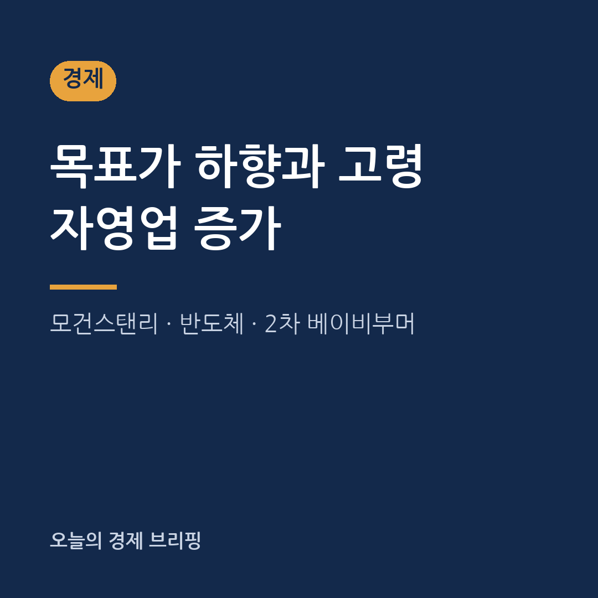
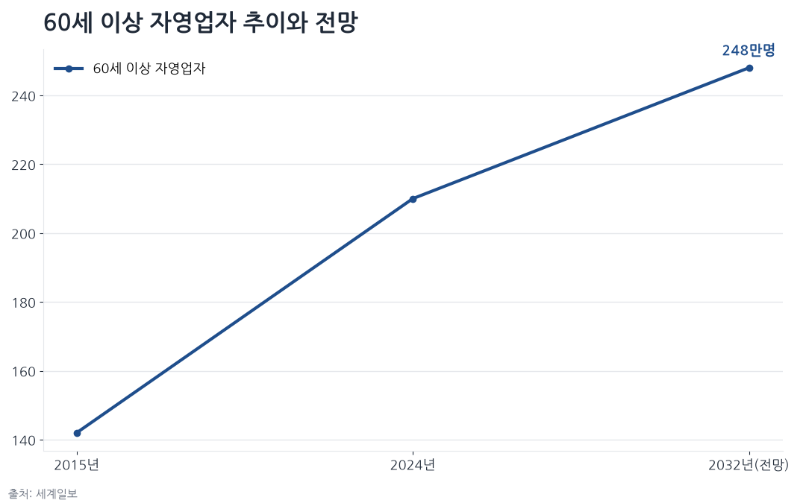

2026-11-21-1530-tistory 발행 키트 · 이 페이지는 검색에 노출되지 않습니다.
제목
카테고리
경제태그
본문 (그림·표 포함)
휴대폰 블로그 앱에서는 그림이 같이 붙지 않을 수 있어요. 그때는 [글자만 복사] 후 아래 이미지를 저장해 [그래프1]·[표1] 자리에 첨부하세요.

핵심 결론부터 정리합니다. 11월 20일 코스피 급락 때 삼성전자와 SK하이닉스를 개인투자자가 대규모로 받아냈고, 외국계 증권사는 두 종목의 목표주가를 크게 낮추면서도 내년 이익 전망은 높였습니다. 별도로 정부는 2차 베이비부머의 은퇴 이후 창업 증가에 대비해 고령 자영업자 지원 방안 연구에 착수했습니다.
▶ 배경: 20일 반도체 중심의 급락
20일 코스피는 5.21% 하락한 4,869.96으로 마감했습니다. 삼성전자는 7.01%, SK하이닉스는 5.92% 내렸습니다.
20일 코스피·반도체 대형주 마감 현황
| 구분 | 하락률 | 종가 |
|---|---|---|
| 코스피 | 5.21% | 4,869.96 |
| 삼성전자 | 7.01% | 183,100원 |
| SK하이닉스 | 5.92% | 1,113,000원 |
출처: 세계일보
▶ 핵심 내용 1: 수급과 증권가 전망의 엇갈림
보도에 따르면 급락한 20일 개인은 코스피 시장의 전기·전자 업종 주식을 사들인 금액이 판 금액보다 1조5178억원 많았습니다. 이를 순매수(매수 금액에서 매도 금액을 뺀 값이 플러스인 상태)라고 부릅니다.
같은 업종에서 외국인과 기관은 합쳐 2조원 가까이 순매도했습니다. 큰 폭 하락 구간에서 투자 주체별 방향이 갈린 셈입니다.
모건스탠리는 삼성전자 목표주가(증권사가 제시하는 적정 주가 전망치)를 381,000원에서 309,000원으로 약 19% 조정했습니다. SK하이닉스는 260만원에서 160만원으로 약 38% 낮췄습니다.
반면 내년 영업이익 전망은 삼성전자 9%, SK하이닉스 13% 높였습니다. 키움증권은 삼성전자 29만원, SK하이닉스 180만원의 목표주가를 제시했습니다.
증권사 목표주가 및 전망 조정
| 종목 | 모건스탠리 목표주가 | 내년 영업이익 전망 | 키움증권 목표주가 |
|---|---|---|---|
| 삼성전자 | 381,000원 → 309,000원 | 9% 상향 | 29만원 |
| SK하이닉스 | 260만원 → 160만원 | 13% 상향 | 180만원 |
출처: 세계일보
▶ 영향과 확인할 점
목표주가가 내려갔다고 이익 전망이 나빠진 것은 아닙니다. 이번 조정은 기업이 벌어들일 이익 전망과 시장이 매기는 가치 수준을 따로 봐야 한다는 점을 보여 줍니다.
확인할 점은 세 가지입니다. 첫째, 이후 거래일의 외국인·기관 매매 방향입니다. 둘째, 다른 증권사의 목표주가 조정 여부입니다. 셋째, 본인의 투자 비중과 차입 여부입니다. 이 글은 특정 종목의 매매를 권하지 않습니다.
▶ 핵심 내용 2: 은퇴 이후 창업, 정부 연구 착수
1964~1974년생인 2차 베이비부머는 954만명으로 총인구의 18.6%입니다. 은퇴 시기는 2024~2034년으로 제시됐습니다. 앞선 1차 베이비부머(1955~1963년생)는 705만명입니다.
중소벤처기업부와 소상공인시장진흥공단은 고령 자영업자의 실태를 분석하고 지원책을 찾는 연구를 시작했고, 완료 시점은 2027년 1분기입니다.
▶ 고령 자영업자 통계
60세 이상 자영업자는 2015년 142만명에서 2024년 210만명으로 증가했고, 2024년 전체 자영업자의 37.1%를 차지했습니다. 2032년에는 248만명으로 전망됩니다.

올해 8월 농림어업을 제외한 통계에서는 60세 이상 자영업자가 152만1,400명으로 1년 전보다 7만7,200명 늘었습니다. 같은 기간 전체 자영업자는 487만1,400명으로 16만3,700명 증가했습니다. 70세 이상은 35만9,800명으로 1년 새 3만8,700명 늘었습니다.
업종은 운수창고·숙박음식·도소매·건설업에 65.7%가 집중되어 있고, 15~59세 자영업자의 같은 비중은 56.2%입니다. 고령층 중 생계형 비중은 약 46%이며, 평균 연금은 월 79만원, 평균 주당 근로시간은 46시간으로 집계됐습니다.
▶ 영향과 확인할 점
특정 업종에 고령 창업이 몰리면 경쟁이 심해질 수 있고, 생계형 비중이 높은 만큼 폐업 위험 관리가 정책 과제가 됩니다. 연구 결과가 나오는 2027년 1분기 이후 구체적 지원책이 어떻게 나올지 지켜볼 필요가 있습니다.
▶ 정리
1. 11월 20일 코스피 5.21%, 삼성전자 7.01%, SK하이닉스 5.92% 하락했고 개인은 전기·전자 업종을 1조5178억원 순매수했습니다.
2. 모건스탠리는 두 종목 목표주가를 낮추는 한편 내년 영업이익 전망은 각각 9%, 13% 상향했습니다.
3. 60세 이상 자영업자는 2024년 210만명이며, 정부는 2027년 1분기 완료 목표로 지원 방안 연구를 진행합니다.
이미지 (개별 복사·저장)
출처 (본문 맨 아래에 붙여넣기 권장)
- 세계일보, 삼성전자 7% 폭락에 개미 1.5조 쓸어담았다…목표가도 줄하향 [숫자 뒤의 진실], https://www.segye.com/newsView/20261121501082 - 세계일보, 2차 베이비부머 954만명 은퇴 본격화…정부, 은퇴 뒤 가게 차리는 고령층 지원 방안 연구 착수, https://www.segye.com/newsView/20261120509760